Программирование роботов
Теоретический блок
Что такое программирование роботов
Программирование роботов — это процесс создания последовательности команд, по которым робот выполняет действия: движется, поворачивает, останавливается, реагирует на датчики, выводит изображение на экран или подаёт звуковой сигнал.
Робот LEGO MINDSTORMS EV3 выполняет только те действия, которые заложены в его программу. Если в программе указано ехать вперёд, робот начнёт движение. Если добавлено условие остановки перед препятствием, робот сможет реагировать на объект перед собой.
В среде LEGO MINDSTORMS EV3 программа создаётся не в виде текстового кода, а с помощью графических блоков. Это удобно для начинающих, потому что каждый блок имеет понятное назначение и визуально показывает, какое действие должен выполнить робот.
При программировании важно не просто поставить блоки в рабочую область, а заранее продумать алгоритм. Робот должен получить точную инструкцию: что делать сначала, что делать потом, когда остановиться и как реагировать на изменения окружающей среды.
Основные понятия
Отдельное действие
Команда задаёт одно конкретное действие робота: ехать вперёд, повернуть, остановиться, включить звук или вывести текст на экран.
Порядок действий
Алгоритм — это точная последовательность команд, которая приводит к нужному результату. Например: ехать вперёд, повернуть, снова ехать вперёд.
Алгоритм для робота
Программа — это алгоритм, записанный в среде EV3 так, чтобы его мог выполнить программируемый блок.
Робот EV3
Исполнитель — это объект, который выполняет команды. В данном случае исполнителем является робот LEGO MINDSTORMS EV3.
Как создаётся программа для робота
Этапы создания программы
Сначала необходимо понять, какую задачу должен выполнить робот. Затем задача разбивается на простые действия. После этого в среде EV3 подбираются нужные блоки, программа загружается в модуль и проверяется на реальной модели.
Пример
Если робот должен проехать по квадрату, алгоритм можно описать так: ехать вперёд, повернуть на 90 градусов, повторить эти действия четыре раза, затем остановиться.
Среда LEGO MINDSTORMS EV3
Среда программирования EV3 предназначена для создания программ, их загрузки в модуль и проверки работы робота. В ней есть рабочая область, палитры блоков, страница аппаратных средств и кнопки запуска программы.
В рабочей области размещаются блоки программы. В нижней части окна находятся палитры программирования. Они разделены по цветам, чтобы обучающимся было проще ориентироваться в назначении блоков.
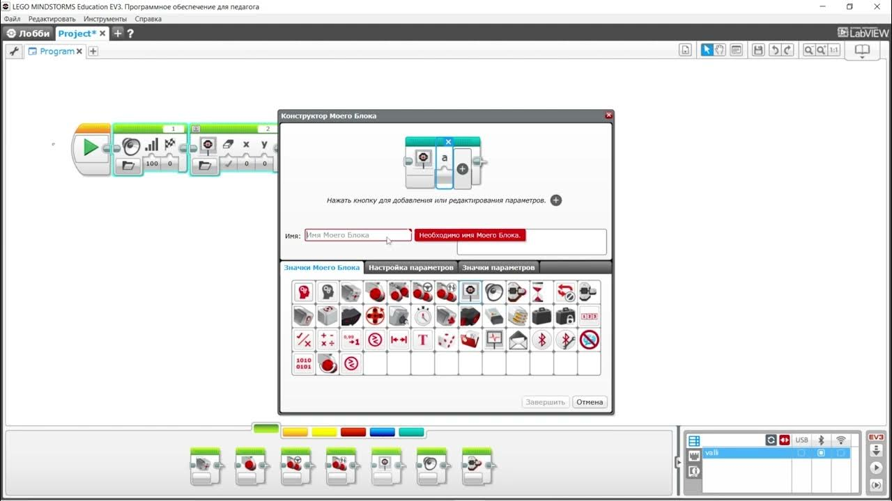
Интерфейс среды EV3
В рабочей области создаётся программа, а внизу расположены палитры программных блоков.
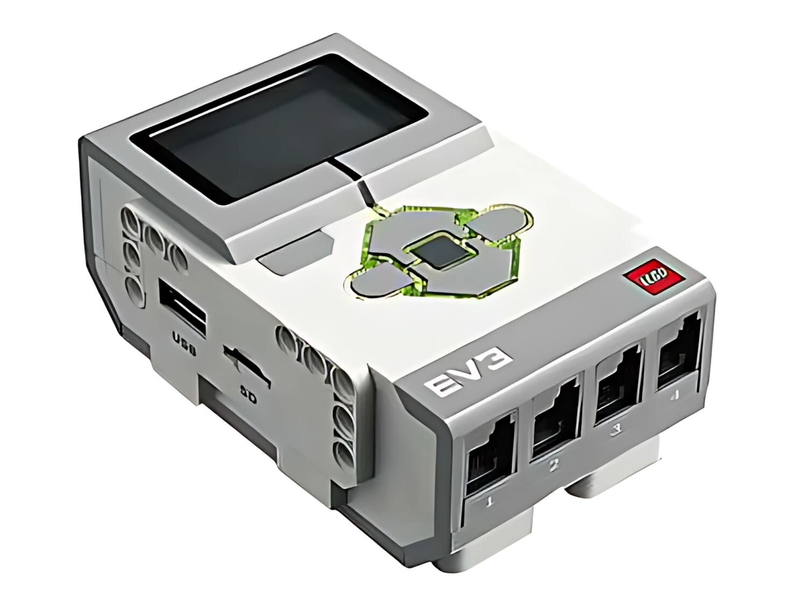
Модуль EV3
Модуль выполняет программу, управляет моторами и получает данные от подключённых датчиков.
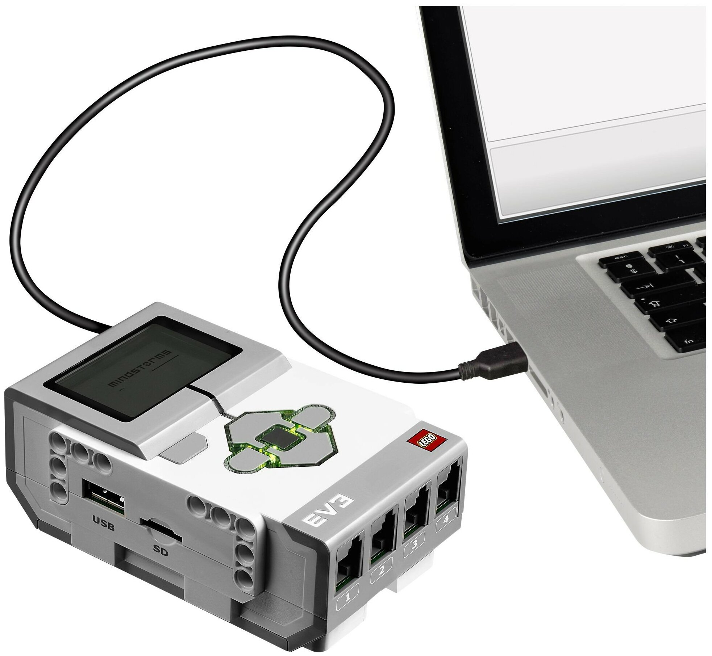
Загрузка программы
После составления программы её нужно загрузить в модуль EV3 и запустить на роботе.
Палитры программирования EV3
В EV3 блоки распределены по цветным палитрам. Каждая палитра отвечает за свою группу действий. Такое деление помогает быстрее находить нужные команды и понимать структуру программы.
Действие
Используется для управления моторами, экраном, звуком и индикатором состояния модуля. С этой палитры обычно начинается знакомство с программированием роботов.
Примеры блоков: большой мотор, средний мотор, рулевое управление, независимое управление моторами, экран, звук.
Управление операторами
Позволяет управлять порядком выполнения программы. С её помощью создаются ожидания, циклы и условия.
Примеры блоков: начало, ожидание, цикл, переключатель, прерывание цикла.
Датчики
Используется для получения информации от датчиков. Благодаря этим блокам робот может реагировать на внешние условия.
Примеры блоков: датчик цвета, датчик касания, ультразвуковой датчик, гироскопический датчик.
Операции с данными
Применяется для вычислений, хранения значений и сравнения данных. Эти блоки нужны для более сложных программ.
Примеры блоков: переменная, константа, математика, округление, сравнение.
Палитры EV3 и их назначение
| Палитра | Назначение | Когда используется |
|---|---|---|
| Зелёная | Управление действиями робота | Когда нужно заставить робота ехать, повернуть, издать звук или вывести текст |
| Оранжевая | Управление ходом программы | Когда нужны ожидания, повторения, условия и циклы |
| Жёлтая | Работа с датчиками | Когда робот должен реагировать на цвет, расстояние, касание или угол |
| Красная | Операции с данными | Когда нужны вычисления, переменные, сравнения и логические значения |
Блоки движения
Движение робота обеспечивают моторы. В базовой модели чаще всего используются два больших мотора: один управляет левым колесом, второй — правым. Если оба мотора вращаются с одинаковой мощностью, робот движется прямо. Если моторы вращаются с разной мощностью, робот поворачивает.
Блок «Рулевое управление»
Позволяет управлять двумя моторами одновременно. С его помощью можно задать движение вперёд, назад, поворот, мощность, количество секунд, градусов или оборотов.
Блок «Независимое управление моторами»
Позволяет отдельно задавать мощность левого и правого мотора. Этот блок удобно использовать для разворота на месте и движения по дуге.
Блок «Большой мотор»
Управляет одним большим мотором. Его можно включать на время, на количество градусов или на количество оборотов.
Экран и звук
Робот может выводить текст и изображения на экран, а также подавать звуковые сигналы. Это удобно для проверки этапов программы.
Пример
Если левый и правый моторы работают с одинаковой мощностью, робот едет прямо. Если один мотор остановлен, а второй продолжает вращаться, робот поворачивает. Если моторы вращаются в разные стороны, робот разворачивается на месте.
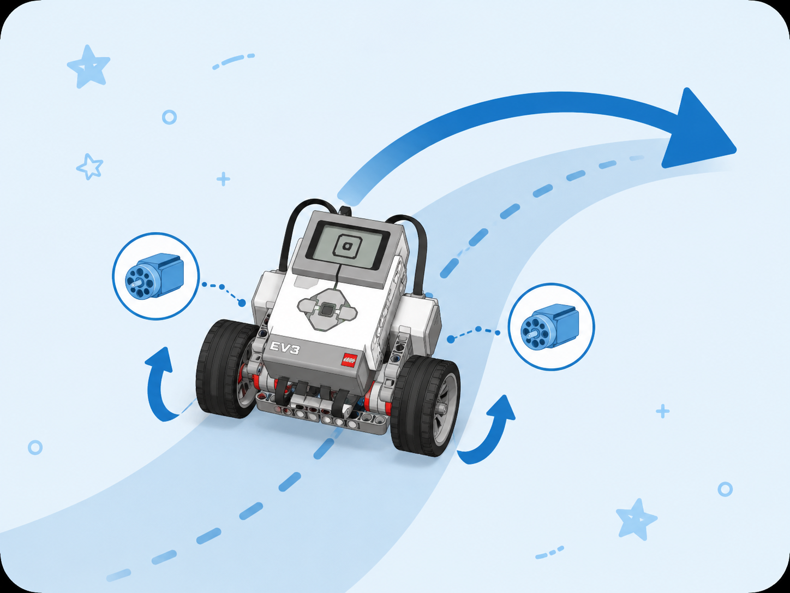
Рулевое управление
Используется для движения стандартной модели робота с двумя моторами.
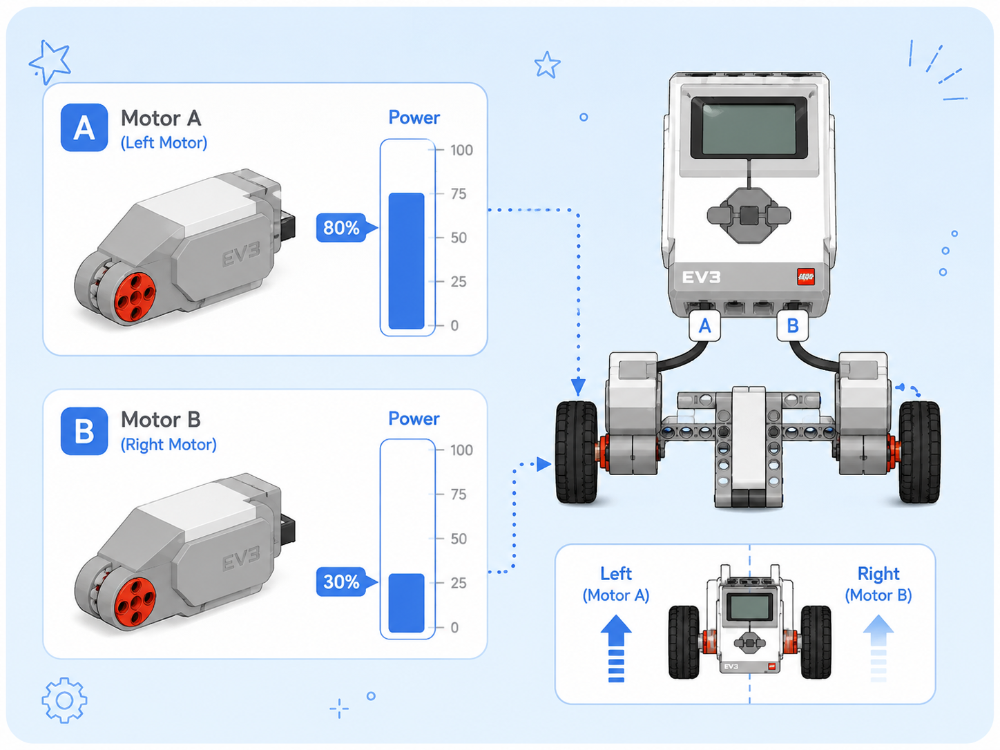
Независимое управление
Позволяет задавать мощность каждого мотора отдельно.
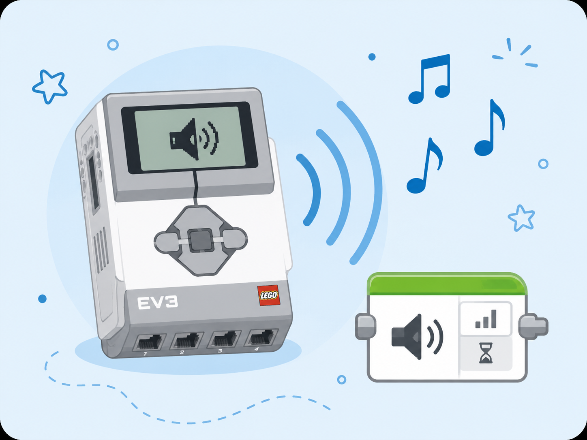
Звук
Позволяет воспроизводить звуковые сигналы во время выполнения программы.
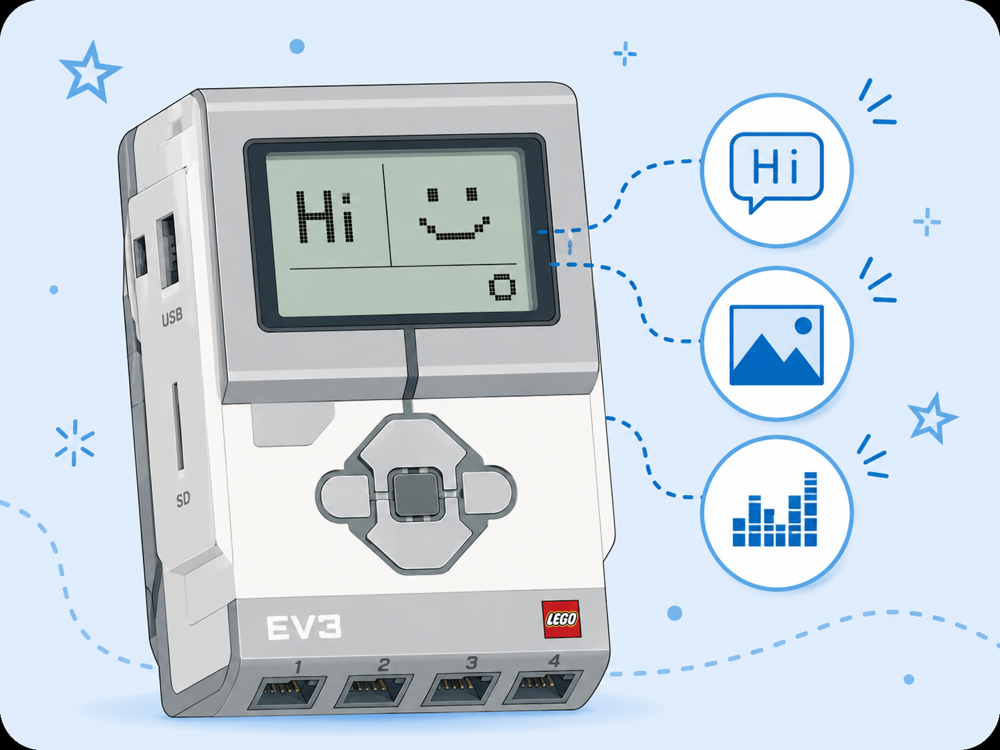
Экран
Используется для вывода текста, изображений и простых графических элементов.
Циклы и условия
В программах роботов часто встречаются повторяющиеся действия. Например, при движении по квадрату робот несколько раз выполняет одну и ту же последовательность: едет вперёд и поворачивает. Чтобы не собирать одинаковые блоки много раз, используется цикл.
Условие позволяет роботу выбрать действие в зависимости от ситуации. Например, если датчик цвета обнаружил чёрную линию, робот должен остановиться. Если препятствие находится ближе 30 см, робот может отъехать назад или повернуть.
Пример цикла для движения по квадрату
Работа с датчиками
Датчики позволяют роботу получать информацию об окружающей среде. Благодаря датчикам робот может не только выполнять заранее заданную последовательность действий, но и реагировать на происходящее вокруг.
Цвет и яркость
Помогает определять цвет поверхности или яркость отражённого света. Используется для движения по линии и остановки у цветной метки.
Нажатие кнопки
Определяет, нажата кнопка или отпущена. Может использоваться для запуска программы или реакции на столкновение.
Расстояние
Измеряет расстояние до объекта. Позволяет роботу останавливаться перед препятствием или объезжать его.
Угол поворота
Определяет угол и скорость вращения. Используется для более точных поворотов робота.
Датчики и примеры использования
| Датчик | Что определяет | Пример программы |
|---|---|---|
| Датчик цвета | Цвет или яркость поверхности | Робот едет до чёрной линии и останавливается |
| Датчик касания | Нажатие или отпускание кнопки | После нажатия робот начинает движение |
| Ультразвуковой датчик | Расстояние до объекта | Робот останавливается перед препятствием |
| Гироскопический датчик | Угол поворота | Робот поворачивает на 90 градусов |
Операции с данными
В более сложных программах робот может выполнять вычисления. Например, можно рассчитать, сколько оборотов должны сделать колёса, чтобы робот проехал определённое расстояние.
Для таких задач используются блоки красной палитры. Они позволяют создавать переменные, задавать константы, выполнять математические действия, округлять значения и сравнивать данные.
Пример
Если известен диаметр колеса, можно вычислить длину окружности колеса. Затем нужное расстояние делится на длину окружности, и получается количество оборотов, которое должен выполнить мотор.
Проверь себя: что будет делать робот?
Нажмите на ситуацию, чтобы увидеть пояснение.
Робот будет двигаться прямо, если конструкция собрана симметрично и колёса вращаются свободно.
Робот начнёт поворачивать, потому что одно колесо будет проходить больший путь, чем другое.
Если в программе задано соответствующее условие, робот может остановиться, повернуть или отъехать назад.
Практический блок
Практическая часть занятия направлена на создание первых программ для робота LEGO MINDSTORMS EV3. Обучающиеся учатся управлять движением, использовать циклы, задавать повороты и применять датчики для реакции на внешние условия.
Задание 1. Движение по прямой
Цель: научиться использовать блок «Рулевое управление» для движения робота вперёд.
Составьте программу, в которой робот едет вперёд на заданное количество оборотов колёс, а затем останавливается.
- Откройте среду программирования EV3.
- Создайте новую программу.
- Добавьте блок «Рулевое управление».
- Проверьте, что моторы указаны на портах B и C.
- Выберите режим движения на количество оборотов.
- Установите значение 2 оборота.
- Загрузите программу в модуль EV3 и запустите её.
Подсказка: если робот едет назад, измените направление движения или значение мощности. Если робот поворачивает, проверьте, правильно ли подключены моторы.
Задание 2. Движение вперёд и назад
Цель: научиться изменять направление движения робота.
Составьте программу, в которой робот сначала едет вперёд, затем делает небольшую паузу и возвращается назад.
- Добавьте первый блок движения вперёд на 2 оборота.
- Добавьте блок ожидания на 1 секунду.
- Добавьте второй блок движения.
- Измените направление движения на обратное.
- Установите движение назад на 2 оборота.
- Загрузите программу в робота.
- Проверьте, вернулся ли робот примерно в исходное положение.
Подсказка: для движения назад можно использовать отрицательное значение мощности.
Задание 3. Движение по квадрату
Цель: научиться составлять программу движения по заданной траектории.
Составьте программу, в которой робот проезжает траекторию в виде квадрата. Для этого нужно несколько раз повторить движение вперёд и поворот.
- Добавьте блок движения вперёд.
- Настройте расстояние движения.
- Добавьте блок поворота.
- Настройте поворот примерно на 90 градусов.
- Повторите последовательность четыре раза.
- Запустите программу и проверьте траекторию.
- При необходимости измените параметры поворота.
Подсказка: если робот не образует квадрат, нужно подобрать значение поворота. На результат влияет конструкция модели и поверхность.
Задание 4. Квадрат с использованием цикла
Цель: научиться сокращать программу с помощью блока «Цикл».
Переделайте программу движения по квадрату так, чтобы повторяющиеся команды находились внутри цикла.
- Добавьте блок «Цикл» из оранжевой палитры.
- Поместите внутрь цикла движение вперёд.
- Добавьте внутрь цикла поворот.
- Установите количество повторений — 4.
- Загрузите программу в робота.
- Сравните новую программу с предыдущей.
Подсказка: цикл помогает сделать программу короче и понятнее, если одни и те же действия повторяются несколько раз.
Задание 5. Движение по зигзагу
Цель: научиться изменять направление поворотов робота.
Составьте программу, в которой робот движется по траектории зигзага. Для этого необходимо чередовать повороты в разные стороны.
- Добавьте движение вперёд.
- Добавьте поворот вправо.
- Снова добавьте движение вперёд.
- Добавьте поворот влево.
- Повторите последовательность несколько раз.
- Проверьте движение робота на свободной площадке.
Подсказка: для поворотов можно использовать как блок «Рулевое управление», так и независимое управление моторами.
Задание 6. Остановка перед препятствием
Цель: научиться использовать ультразвуковой датчик в программе движения.
Составьте программу, в которой робот едет вперёд и останавливается, если перед ним появляется препятствие на расстоянии 30 см.
- Подключите ультразвуковой датчик к одному из входных портов.
- Добавьте блок движения вперёд.
- Добавьте блок ожидания по показанию ультразвукового датчика.
- Установите условие: расстояние меньше 30 см.
- Добавьте блок остановки моторов.
- Проверьте программу на практике.
Подсказка: если робот не реагирует на препятствие, проверьте порт датчика и выбранный режим измерения расстояния.
Задание 7. Остановка у чёрной линии
Цель: научиться использовать датчик цвета для реакции на поверхность.
Составьте программу, в которой робот движется вперёд до обнаружения чёрной линии, а затем останавливается.
- Подключите датчик цвета.
- Добавьте движение вперёд.
- Добавьте ожидание по датчику цвета.
- Настройте условие для определения чёрной линии.
- Добавьте остановку моторов.
- Проверьте программу на светлой поверхности с чёрной линией.
Подсказка: для чёрной линии обычно используется значение яркости отражённого света. Чёрная поверхность отражает меньше света, чем белая.
Задание 8. Робот подаёт сигналы
Цель: научиться использовать звук, экран и индикатор состояния модуля EV3.
Дополните одну из предыдущих программ так, чтобы робот сообщал о начале и завершении движения.
- Добавьте звуковой сигнал в начало программы.
- Выведите на экран слово «Start» или изображение.
- Запустите движение робота.
- После завершения движения добавьте второй звуковой сигнал.
- Выведите на экран слово «Stop».
- Проверьте работу программы.
Подсказка: сигналы помогают понять, на каком этапе выполнения находится программа.
Примеры алгоритмов программ
В этом разделе представлены примеры программ, которые можно использовать для изучения основных приёмов программирования робота. Они расположены по принципу «от простого к сложному».
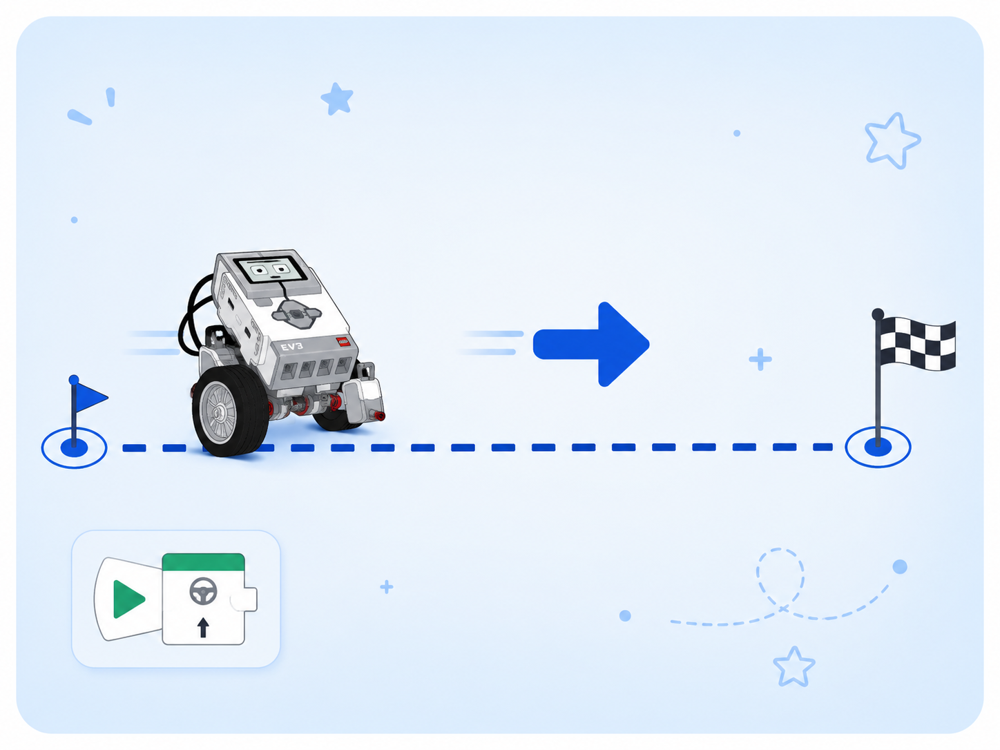
Движение по прямой
Тип программы: линейная.
Блоки: рулевое управление.
Робот едет вперёд на заданное количество оборотов колёс. Этот пример подходит для первого знакомства с движением.
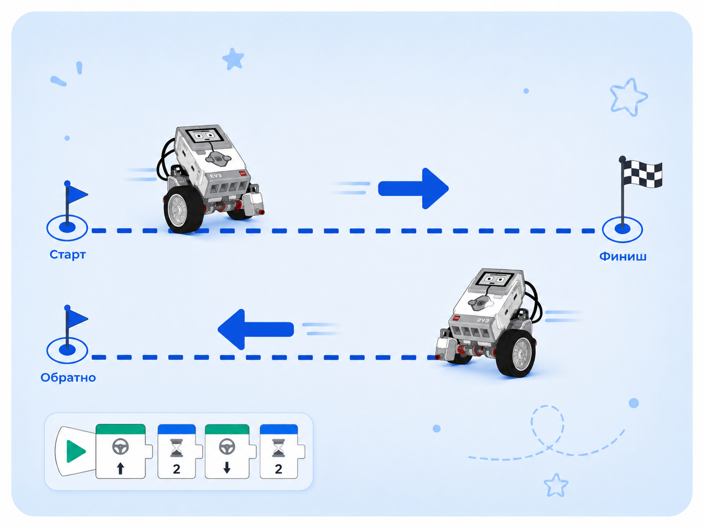
Вперёд и назад
Тип программы: последовательность действий.
Блоки: движение, ожидание.
Робот сначала едет вперёд, затем возвращается назад. Пример помогает понять изменение направления движения.
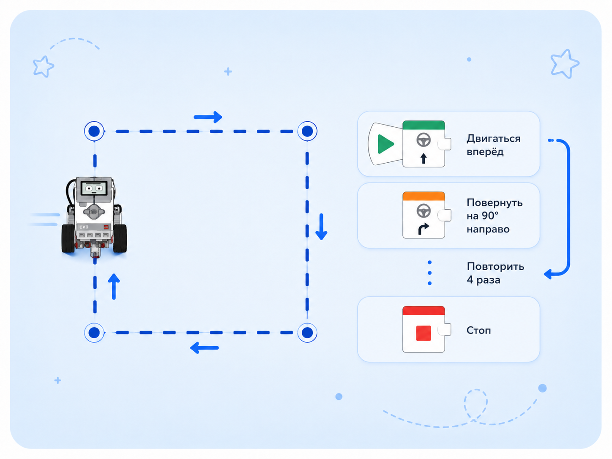
Квадрат
Тип программы: движение по траектории.
Блоки: движение, поворот.
Робот выполняет движение вперёд и поворот четыре раза, чтобы пройти траекторию в форме квадрата.
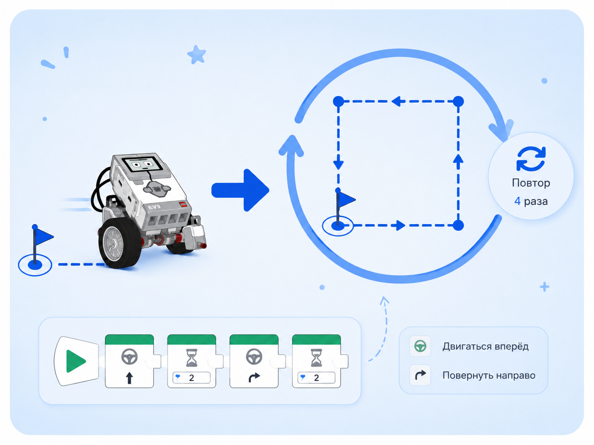
Квадрат в цикле
Тип программы: циклическая.
Блоки: цикл, движение, поворот.
Повторяющиеся действия помещаются внутрь цикла. Это делает программу короче и удобнее.
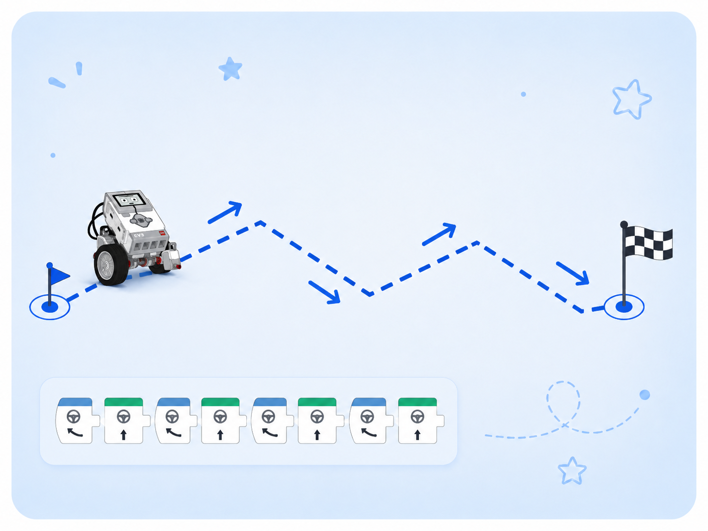
Зигзаг
Тип программы: сложная траектория.
Блоки: движение, повороты.
Робот поочерёдно выполняет повороты в разные стороны, за счёт чего движется по зигзагообразной траектории.
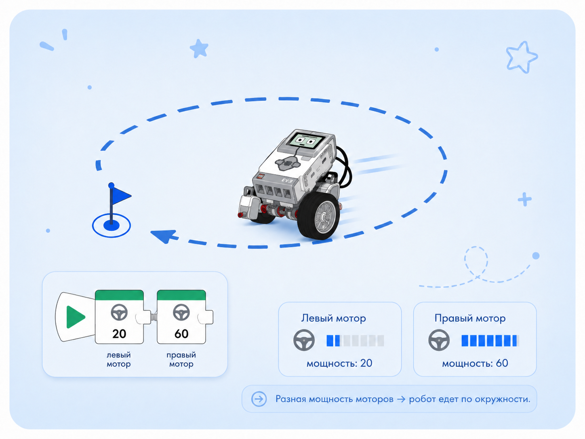
Окружность
Тип программы: движение по дуге.
Блоки: независимое управление моторами.
Робот движется по окружности, если левый и правый моторы работают с разной мощностью.
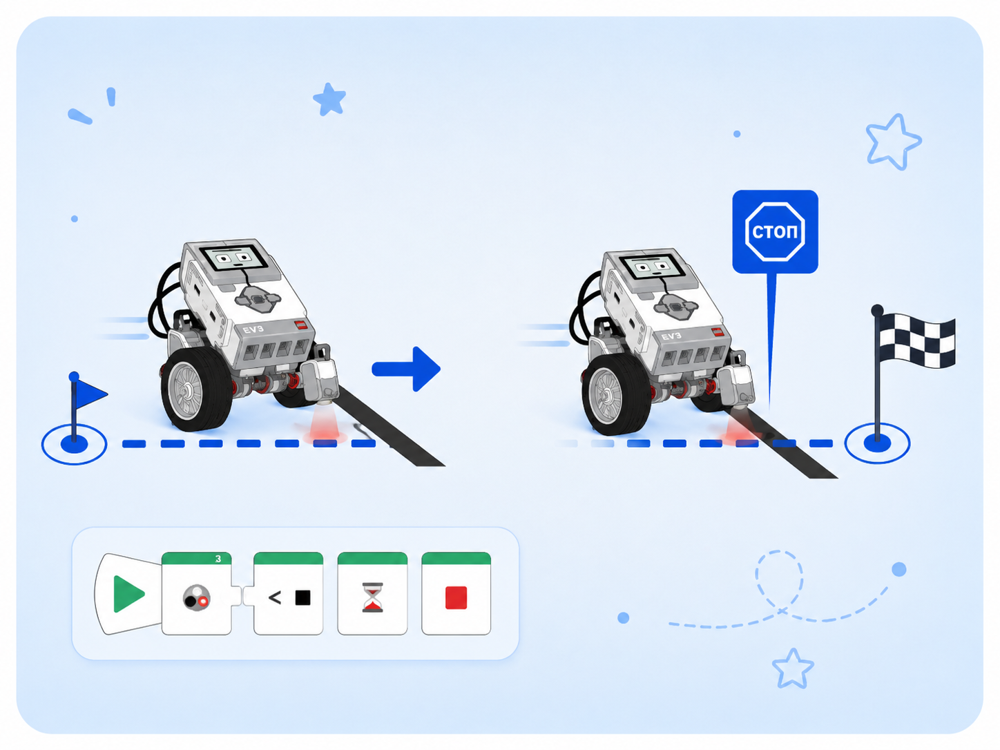
Остановка у линии
Тип программы: программа с датчиком.
Блоки: датчик цвета, движение, остановка.
Робот движется вперёд до тех пор, пока датчик цвета не обнаружит чёрную линию.
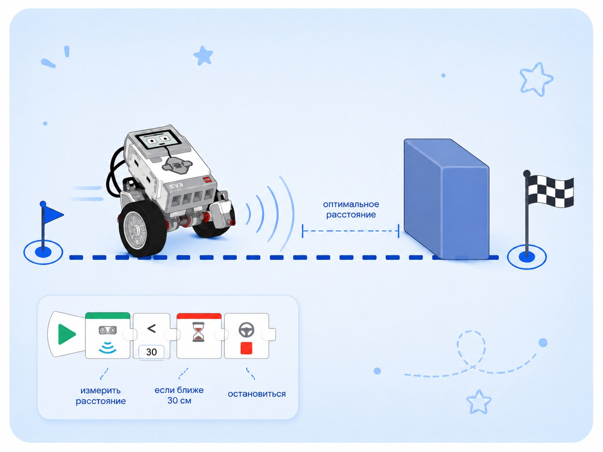
Препятствие
Тип программы: программа с условием.
Блоки: ультразвуковой датчик, движение.
Робот едет вперёд и останавливается, когда расстояние до препятствия становится меньше заданного значения.
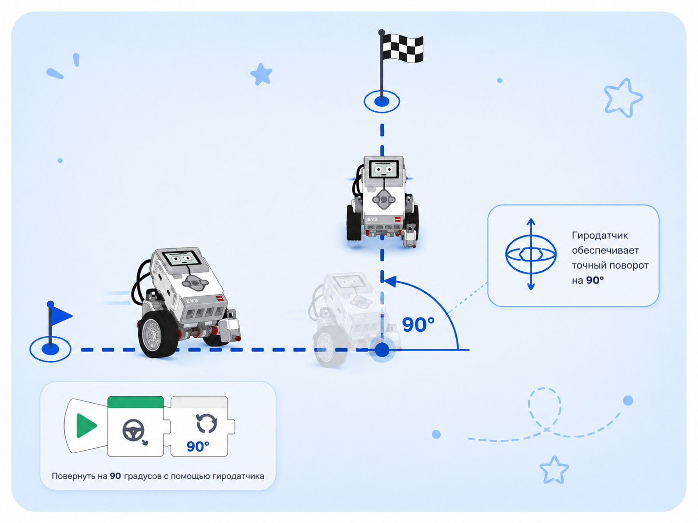
Поворот с гироскопом
Тип программы: точное движение.
Блоки: гироскопический датчик, моторы.
Робот поворачивает на заданный угол, используя показания гироскопического датчика.
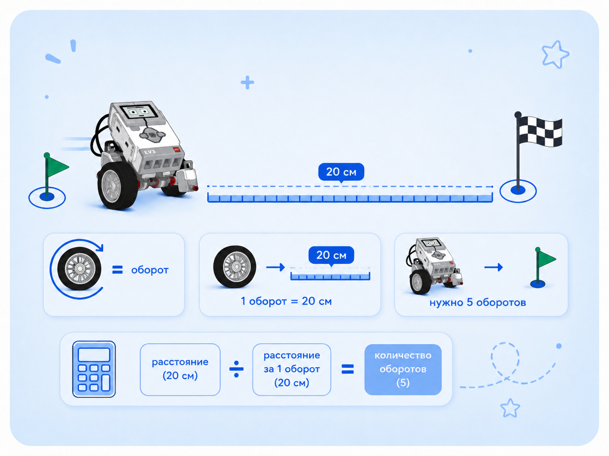
Расчёт расстояния
Тип программы: программа с вычислениями.
Блоки: константа, переменная, математика.
Робот рассчитывает количество оборотов колеса, необходимое для проезда заданного расстояния.
Вопросы для самопроверки
1. Что такое программирование робота?
Программирование робота — это создание последовательности команд, по которым робот выполняет действия и реагирует на внешние условия.
2. Что такое алгоритм?
Алгоритм — это точная последовательность действий, которая приводит к решению задачи или получению нужного результата.
3. Чем программа отличается от алгоритма?
Алгоритм описывает порядок действий, а программа — это алгоритм, записанный в среде программирования так, чтобы его мог выполнить робот.
4. Для чего используется зелёная палитра EV3?
Зелёная палитра используется для действий робота: управления моторами, экраном, звуком и индикатором состояния модуля.
5. Для чего используется оранжевая палитра?
Оранжевая палитра используется для управления ходом программы: ожиданий, циклов, условий и переключателей.
6. Для чего нужен блок «Рулевое управление»?
Блок «Рулевое управление» используется для движения робота с двумя моторами. Он позволяет задавать направление, мощность и длительность движения.
7. Для чего нужен цикл?
Цикл нужен для повторения команд. Например, движение вперёд и поворот можно повторить четыре раза, чтобы робот проехал по квадрату.
8. Какой датчик помогает роботу остановиться перед препятствием?
Для этого используется ультразвуковой датчик, который измеряет расстояние до объекта перед роботом.
9. Для чего используется датчик цвета?
Датчик цвета используется для определения цвета поверхности или яркости отражённого света. С его помощью робот может находить линию.
10. Для чего используется красная палитра?
Красная палитра используется для операций с данными: работы с переменными, константами, математическими вычислениями и сравнениями.